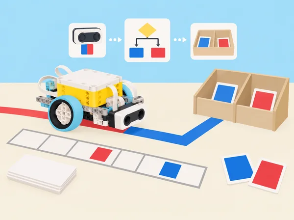
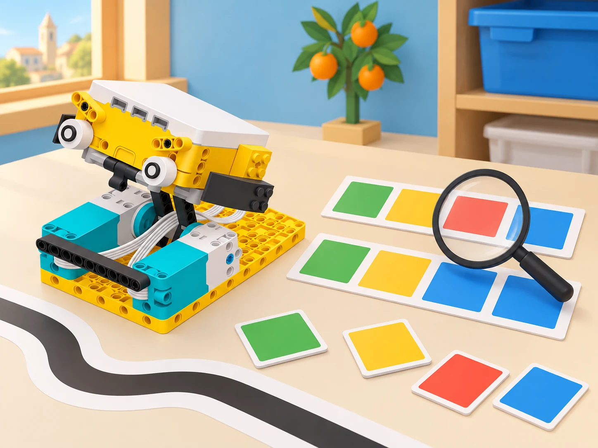

Lògica per a una escola oberta
🏷️ Llistes, condicions i serveis escolars
🌱 Situació, repte i intenció
La situació adapta les sis lliçons de la unitat 7 Arrays, Boolean Expressions, and Conditionals de Foundations of Physical Computing. Les targetes i rutes representen informació inventada: cap muntatge identifica persones, controla portes o protegeix cap espai.
🎯 Aprenentatges i vocabulari
- Crear i llegir una llista com una seqüència ordenada, distingint-ne els elements i les posicions; comprendre que l’ordre i la repetició tenen significat.
- Usar sensors per a afegir valors a una llista, interpretar les lectures que genera el sensor de color i verificar-les amb una mostra de referència, sense donar per fet que qualsevol paper es detecta igual.
- Comparar dues llistes element a element, detectar la primera diferència, i emprar condicions amb
i,o,no, igualtat i desigualtat. - Construir una condició composta a partir de predicats simples; predir-ne el resultat amb una taula de casos abans d’executar-la.
- Descompondre el programa en subprocediments reutilitzables (“els meus blocs”), documentar-ne la funció i depurar per components.
- Modelar el seguiment d’una línia amb sensor de color, ajustar-lo mitjançant proves i comunicar els límits del prototip.
- Relacionar el disseny de serveis escolars amb professions de turisme, acollida i administració pública.
🧩 Model de raonament
Abans de programar, representeu verbalment les condicions i després comproveu-les amb casos. Per a una estació de maqueta, prop_i_color_correcte només és certa si les dues proves són certes; si falta qualsevol lectura, el senyal no s’activa. Una regla inclusiva de ruta pot ser color_blau_o_color_vermell. Una taula de veritat amb totes les combinacions impedeix confiar només en el cas feliç i fa visible què significa cada operador. Per a llistes, escriviu les posicions inicials i compareu els elements en el mateix ordre.
Aquesta notació és suport conceptual: els blocs exactes, la gestió d’índexs i els valors disponibles poden variar segons la versió de l’app.
🧰 Materials i preparació
Abans de començar, munteu una base mòbil estable amb el sensor de color orientat cap avall i comproveu que els ports coincideixen amb el programa. Prepareu una pista curta sobre cartolina mate, amb trams blancs i negres i una zona d’aturada en un color que el sensor puga llegir consistentment; afegiu al costat una tira de colors que servisca de control. Feu una prova amb la llum real de l’aula, la distància al paper i el llindar de detecció.
Marqueu una àrea de circulació lliure i limiteu la velocitat. Si no hi ha sensor o la lectura no és estable, l’alumnat pot introduir les lectures en una taula manual i provar la mateixa lògica sense robot; anoteu que és simulació.
Organitzeu equips de tres o quatre amb rols rotatius: disseny de casos de prova, programació, calibratge/registre i comunicació. Cada equip manté un diari breu per sessió amb predicció, canvi efectuat, resultat i següent pas. Reserveu peces del set en safates, carregueu els hubs i assegureu un dispositiu amb l’app SPIKE. La seqüència no depén d’un model “Game Master” o “Quality Check” de les lliçons LEGO ni reprodueix les seues instruccions de muntatge.
🧰 Materials i organització
Set SPIKE Prime 45678, hub carregat, base mòbil amb sensor de color i, per al mini-repte, sensor de distància; dispositiu amb app SPIKE, cartolina clara/mate, cinta opaca per a línies, targetes de color de mostra, tires de seqüències, peces grans de classificació, obstacles tous, paper i quadern. No es requereixen els models oficials Game Master o Quality Check Robot. Prepareu targetes accessibles amb paraules/símbols a més del color, i una variant manual completa quan la lectura del sensor no siga fiable.
Reduïu velocitat, manteniu la base dins de la pista i atureu el programa abans de reposicionar-la.
📅 Seqüència didàctica
Crear una llista llegible per màquina (90 min)
Fase 1 · Activem i prediem
compareu-la amb una extracció sense reposició i expliqueu per què en una poden repetir-se colors i en l’altra no.
Fase 2 · Explorem i construïm
Creeu en l’app una llista anomenada Lectures, inicialitzeu-la buida, llegiu una targeta amb el sensor i afegiu-ne el valor en intervals acordats. Si la lectura no és estable, introduïu els valors manualment i marqueu la prova com a simulació.
Fase 3 · Expliquem i registrem
Abans de programar la seqüència completa, escriviu pseudocodi i traceu-lo amb cinc targetes. La versió Python és una representació textual de la lògica per a analitzar sobre paper; no s’executa en l’app SPIKE.
quan comença
buida Lectures
repeteix 5 vegades
valor ← llig_color()
afegeix valor a Lectures
espera fins a la següent targeta
mostra Lectureslectures = []
for _ in range(5):
valor = input("Color llegit: ")
lectures.append(valor)
print(lectures)Fase 4 · Apliquem i millorem
Proveu cinc entrades en un ordre conegut i comproveu que l’ordre registrat coincideix. Repetiu amb una lectura inesperada i reviseu què guarda la llista en cada posició.
Fase 5 · Comprovem i reflexionem
Discussió i evidència: quina informació desapareixeria si només comptàrem quants colors de cada tipus hi ha? Què significa una lectura inesperada? Tanqueu amb una definició pròpia de llista, un exemple i un contraexemple.
Comparar dos itineraris (90–135 min)
Fase 1 · Activem i prediem
Fase 2 · Explorem i construïm
Escriviu un algorisme que compare el primer element de cada llista, continue només si coincideixen i indique “coincidència” quan totes les posicions són iguals; si una posició difereix, deseu la primera posició discrepant i atureu la comparació.
Fase 3 · Expliquem i registrem
Traceu manualment tres casos —llistes iguals, diferència inicial i diferència final— i registreu les posicions consultades i el resultat. Anoteu què ha de passar quan les longituds no coincideixen.
Fase 4 · Apliquem i millorem
Intercanvieu el pseudocodi amb un altre equip perquè el prove amb llistes sorpresa, inclosa una seqüència de longitud desigual; anoteu si falla o produeix un fals positiu. Si l’app permet llistes i índexs, implementeu la comparació amb lectures de color de dues tires; si no, manteniu les llistes en paper i programeu la condició amb els blocs equivalents disponibles.
Fase 5 · Comprovem i reflexionem
Completeu una taula de veritat per a dos elements i compareu la regla “tots iguals” (AND) amb “almenys un coincideix” (OR).
Llegir una línia i simplificar el programa (90 min)
Fase 1 · Activem i prediem
Fase 2 · Explorem i construïm
El grup identifica els subproblemes que es repeteixen. Amb la base mòbil i el sensor de color, proveu primer una regla senzilla d’aturada en una línia fosca; després seguiu una pista ampla llegint el valor reflectit/color, ajustant la direcció i repetint.
Fase 3 · Expliquem i registrem
Useu dades en directe per comprovar què detecta el sensor, feu una primera volta a velocitat baixa i marqueu on se n’ix o oscil·la. Anoteu la llum, l’amplària de línia, el llindar, la velocitat i l’orientació de la prova.
Fase 4 · Apliquem i millorem
Modifiqueu una sola cosa per prova. Afegiu deliberadament una línia de color no acordada i observeu si la regla la confon. Descomponeu el programa en blocs propis amb noms funcionals —per exemple SeguirPista i AturarEnMarca— i torneu a cridar-los des del programa principal.

Fase 5 · Comprovem i reflexionem
Compareu la llegibilitat del programa original i del reutilitzable.
Condicions compostes i blocs reutilitzables (90 min)
Fase 1 · Activem i prediem
Fase 2 · Explorem i construïm
Representeu la regla amb frases simples i símbols. Afegiu o perquè dos colors alternatius mostren “consulta el mapa”, i no per indicar que una condició no s’ha complit sense convertir l’absència en una alarma.
Fase 3 · Expliquem i registrem
Completeu taules de veritat i casos de prova, incloent valors just per damunt i per davall de la distància triada. Especifiqueu si o és inclusiu o exclusiu en cada regla.
Fase 4 · Apliquem i millorem
Programeu el comportament en blocs propis amb comentaris; si l’app admet paràmetres, feu un bloc configurable, i si no, expliqueu la limitació i reutilitzeu valors fixos. Proveu tots els casos i traceu-ne un d’inesperat. Introduïu una errada deliberada en un bloc secundari i useu la descomposició per trobar-la.
Fase 5 · Comprovem i reflexionem
Compareu el programa original amb la versió descomposta.
Mini-repte: indicador d’accés a una maqueta (90–135 min)
Fase 1 · Activem i prediem
Fase 2 · Explorem i construïm
Definiu requisits mesurables: avís només després del marcador de proximitat; seqüència de dos o tres colors correcta i en ordre; “revisar ruta” i reinici davant d’una diferència; com a màxim un avís per intent. Escriviu pseudocodi i un diagrama d’estats abans de connectar els sensors i els llums/sons del hub.
Fase 3 · Expliquem i registrem
Creeu llistes per a la seqüència esperada i la llegida, combineu operadors i descomponeu avís, lectura i reinici en blocs propis. Prepareu una matriu de proves: proximitat absent/present; seqüència correcta; primer o segon color incorrecte; ordre invertit; retirada durant la lectura; reinici després d’error.
Fase 4 · Apliquem i millorem
Executeu la matriu, registreu fallades i feu almenys una iteració. Si el kit o l’app no ofereix una funció necessària, useu un botó del hub, una entrada manual o targetes, i identifiqueu-ho com a alternativa.
Fase 5 · Comprovem i reflexionem
Demostreu el prototip a un altre equip i reviseu cada requisit.
Professions que organitzen una visita (60–90 min)
Fase 1 · Activem i prediem
Fase 2 · Explorem i construïm
Exploreu rols de recepció, guia, interpretació, accessibilitat, organització d’esdeveniments i administració municipal amb fonts públiques preparades per la docent. Distingiu professió, tasca diària, competències, formació i responsabilitats; compareu les necessitats d’una visita escolar, d’un museu i d’una oficina d’informació turística.
Fase 3 · Expliquem i registrem
Cada equip tria un perfil sense vincular-lo amb les preferències personals de cap alumne i representa amb peces o cartó un punt d’informació o part d’un itinerari accessible. Connecteu una tasca amb l’ús de llistes i condicions i anoteu una decisió que requeriria escoltar les persones usuàries.
Fase 4 · Apliquem i millorem
Reviseu si la maqueta ofereix indicacions comprensibles per a més d’una persona usuària. Feu un canvi de disseny a partir d’una pregunta o necessitat d’accessibilitat identificada.
Fase 5 · Comprovem i reflexionem
Prepareu una explicació d’un minut amb una decisió humana que el prototip no pot prendre, una pregunta per a les persones usuàries i un límit de la maqueta. Feu una galeria i una autoavaluació voluntària i privada sobre habilitats practicades i una pregunta per investigar.
🧪 Evidències i avaluació
Guardeu llistes d’exemple, pseudocodi llegit per un altre equip, registres de sensor, comparador provat amb coincidència/diferència/desigualtat de longitud, taules de veritat, programa segmentat en blocs propis, registre d’iteracions del seguidor de línia i matriu de proves del mini-repte. Useu una escala descriptiva de quatre nivells per a: (1) estructura i ordre de les llistes; (2) correcció de condicions i operadors; (3) proves que inclouen casos límit i depuració documentada; (4) reutilització clara de blocs; (5) comunicació de límits i col·laboració.
No puntueu només que el robot “funcione”: l’alumnat pot demostrar comprensió amb simulació en paper o explicació traçada quan hi ha limitacions de maquinari. Coavaluació: identifica una prova que falta i proposa com afegir-la.
♿ Participació, accessibilitat i seguretat
Permeteu treballar amb seqüències tàctils, targetes etiquetades i pseudocodi en lloc de discriminar colors visualment. Cap alumne ha d’actuar com a “visitant” sota una falsa alarma, compartir interessos professionals personals ni descriure situacions de seguretat de sa casa. Totes les dades són inventades i referides a targetes o objectes de maqueta. Eviteu tons d’alarma intensos; oferiu senyal visual, patró suau o text equivalent.
Distribuïu els rols i assegureu que tothom pot contribuir a una part tècnica o de disseny sense haver de conduir el robot.
🔗 Referents i adaptació
Adapta les sis lliçons de la unitat 7 Arrays, Boolean Expressions, and Conditionals del curs LEGO Education *Foundations of Physical Computing*: Intro to Arrays (Lists) & Compound Conditionals, Comparing Arrays (Lists), Conditionals and Simplifying Code, Conditionals and Boolean Expressions, Mini-Challenge: Security Alarm Using Operators i Connecting to Careers: Hospitality & Tourism and Government & Public Administration.
Manté la creació i lectura de llistes amb sensor, la seqüència aleatòria/reposició com a idea de repte, la comparació de seqüències, el seguiment de línia i els blocs propis, la lògica composta, la prova iterativa d’un dispositiu i la recerca professional; canvia els jocs, objectes i contextos per recursos originals d’una jornada escolar. El prototip d’indicador és expressament no segur i no es fa servir per protegir persones o espais.